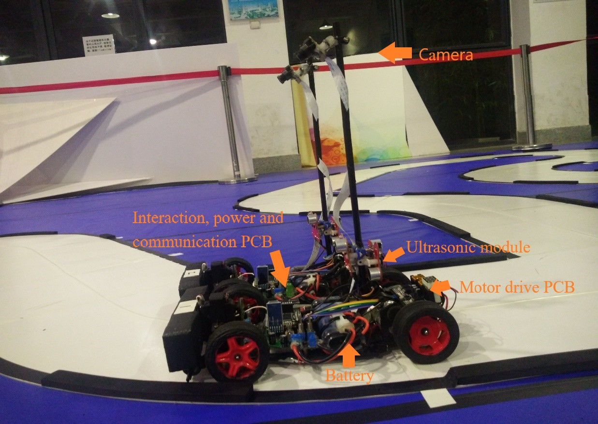
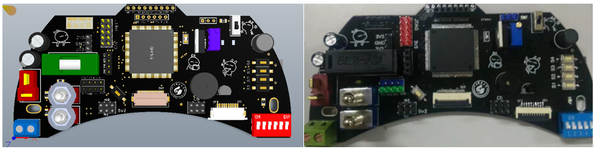
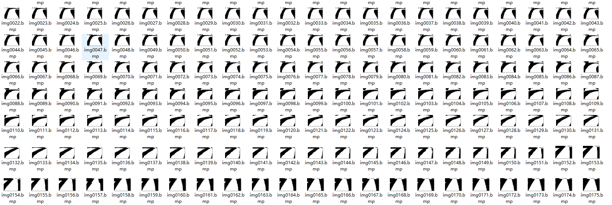
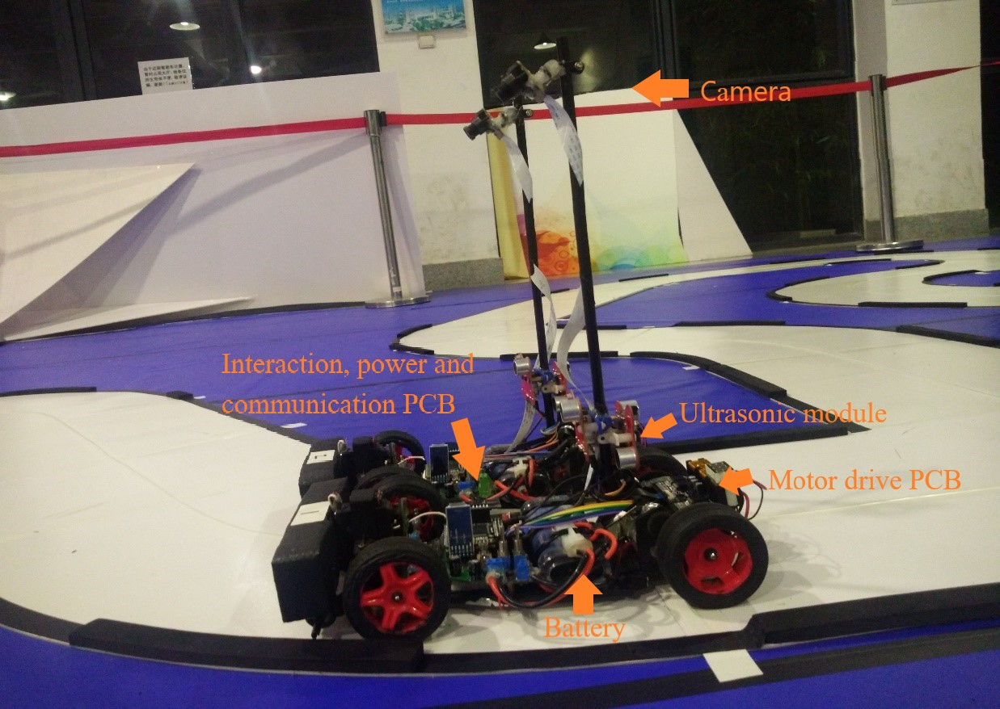
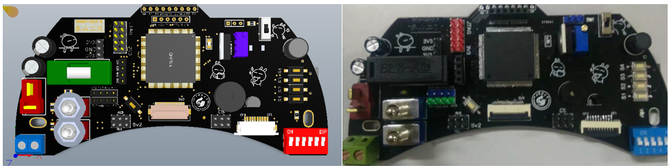
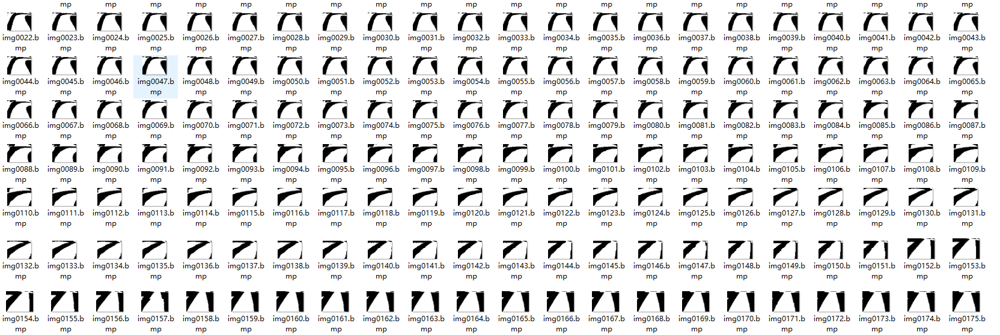

The demonstration of our autonomous driving method
Fig. My autonomous car's appearance
Fig. Printed circuit board
Fig. Preprosessed binary image of road

Fig. Routine test
NXP Cup: Students Build and Race Autonomous Model Cars
Fig. competition venue
| Months in advance of the competition, each team built an autonomous model car using the base components from NXP that you'd find in a modern vehicle, including controllers, sensors and motor drive electronics. They used industry-standard tools like MATLAB and Simulink to employ model-based design workflows. They learned hardware design and software coding, getting exposure to real-world concepts like driver replacement and connectivity. They rolled up their sleeves and coded, tested, debugged and deployed. And, like any carmaker, collaboration and team work were critical to their development. During each trial along the design path, they learned what it takes to build a reliable autonomous model car that was fast and stable as a team. After the cars were built, rounds of competitions were held across Europe and North Africa. During each leg of the competition, the teams raced their cars for fastest time running on a track of curves, intersections, hills, bumpy roads and straights that simulated a real-world road experience the fastest without derailing won. The races culminated at the final NXP Cup at Fraunhofer IIS Erlangen, which brought together 17 universities. |
Fig. Data analysis about the speed and direction of the car
The demonstration of our autonomous driving method
Fig. My autonomous car's appearance
Fig. Printed circuit board
Fig. Preprosessed binary image of road
Fig. Routine test